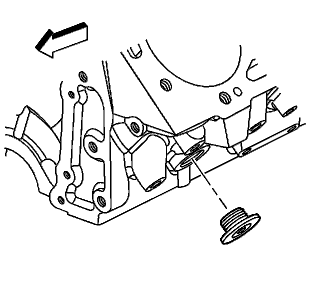

Cooling System Draining and Filling (Vac-N-Fill)
Draining and Filling Cooling System (Vac-N-Fill)
Tools Required
^ J 26568 Coolant and Battery Tester
^ J 38185 Hose Clamp Pliers
Draining Procedure
Caution: To avoid being burned, do not remove the radiator cap or surge tank cap while the engine is hot. The cooling system will release scalding fluid and steam under pressure if radiator cap or surge tank cap is removed while the engine and radiator are still hot.
1. Follow the steps below in order to remove the surge tank fill cap:
1. Slowly rotate the cap counterclockwise.
2. Stop rotating and allow the hissing to stop.
3. After all the hissing stops, continue turning counterclockwise in order to remove the cap.
2. Raise and support the vehicle. Refer to Lifting and Jacking the Vehicle.
3. Place a drain pan under the lower radiator hose.
4. Using the J 38185, reposition the lower radiator hose clamp.
5. Remove the lower radiator hose from the radiator.
6. Drain the cooling system.

7. If a complete engine block drain is required, remove the left and right engine block coolant drain plugs.
8. Remove the engine block coolant heater, if equipped. Refer to Coolant Heater Replacement.
9. Inspect the coolant.
10. Follow the appropriate procedure based on the condition of the coolant:
^ Normal in appearance-Follow the filling procedure.
^ Discolored-Follow the flush procedure. Refer to Flushing.
Filling Procedure
Notice: The procedure below must be followed. Improper coolant level could result in a low or high coolant level condition, causing engine damage.
1. Install the lower radiator hose to the radiator.
2. Using the J 38185, reposition the lower radiator hose clamp.
Notice: Refer to Fastener Notice.
3. If the left and right engine block coolant drain plugs were removed, perform the following:
1. Apply pipe sealer to the drain plugs.
2. Install the drain plugs.
Tighten the drain plugs to 60 N.m (44 lb ft).
4. Install the engine block coolant heater, if equipped. Refer to Coolant Heater Replacement.
5. Lower the vehicle.
Important: Use a 50/50 mixture of DEX-COOL antifreeze and clean, drinkable water.
6. Slowly fill the cooling system with a 50/50 coolant mixture. Refer to Approximate Fluid Capacities.
7. Install the coolant pressure cap.
8. Start the engine.
9. Run the engine at 2,000-2,500 RPM until the engine reaches normal operating temperature.
10. Allow the engine to idle for 3 minutes.
11. Shut the engine OFF.
12. Allow the engine to cool.
13. Top off the coolant as necessary.
14. Inspect the concentration of the engine coolant using the J 26568.
15. Rinse away any excess coolant from the engine and the engine compartment.